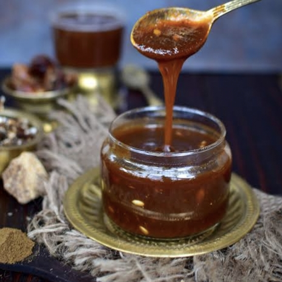

Telugu Ruchulu
తెలుగు రుచులు
TamarindiChutny/
చింతపండుచట్నీ
Home Page
Click to change the language
తెలుగు కోసం క్లిక్ చేయండి
Ingredients:
½ cup tamarind (seedless)
½ cup jaggery (or sugar)
1 tsp cumin powder (roasted)
½ tsp black salt (or regular salt)
½ tsp red chili powder
1½ cups water

Instructions:
Soak tamarind in warm water for 15-20 minutes, then mash and strain to remove pulp.
Cook tamarind pulp with jaggery (or sugar) in a pan on low heat until it dissolves.
Add spices—cumin powder, black salt, and red chili powder—mix well, and simmer for 5-10 minutes.
Adjust consistency by adding more water if needed, then let it cool.
Serve with samosas, chaat, or snacks. Store in an airtight jar in the fridge for weeks!
Tip
కావలసినవిః
½ కప్పు చింతపండు (విత్తనాలు లేనిది)
½ కప్పు బెల్లం (లేదా చక్కెర)
1 స్పూన్ జీలకర్ర పొడి (కాల్చిన)
½ స్పూన్ నల్ల ఉప్పు (లేదా సాధారణ ఉప్పు)
½ స్పూన్ ఎర్ర మిరప పొడి
1½ కప్పుల నీరు చింతపండును గోరువెచ్చని నీటిలో 15-20 నిమిషాలు నానబెట్టి, గుజ్జు తీసి వడకట్టండి.
చింతపండు గుజ్జును బెల్లం (లేదా పంచదార)తో పాన్లో తక్కువ వేడి మీద కరిగిపోయే వరకు ఉడికించాలి
సుగంధ ద్రవ్యాలు-జీలకర్ర పొడి, నల్ల ఉప్పు మరియు ఎర్ర మిరప పొడిని బాగా కలపండి మరియు 5-10 నిమిషాలు ఆవేశమును అణిచిపెట్టుకోండి.
అవసరమైతే మరింత నీటిని జోడించడం ద్వారా స్థిరత్వాన్ని సర్దుబాటు చేయండి, ఆపై దానిని చల్లబరచండి.
సమోసాలు, చాట్ లేదా స్నాక్స్తో సర్వ్ చేయండి. వారాలపాటు ఫ్రిజ్లో గాలి చొరబడని జార్లో నిల్వ చేయండి!
చిట్కా